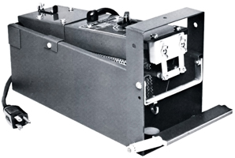

Lyon Electric Super Debeaker ®
Model 950-088
input voltage 120 vac
herts 50/60
Shipping weight 11lbs
Details:
The SUPER DEBEAKER ® is recognized and used around the world as the only proven reliable cans safe method to stop cannibalism, picking, fighting and egg loss.
Everyday the SUPER DEBEAKER ® is used by turkey growers, hatcherymen, broiler producers, egg producers around the world.
Call for Pricing
US and Canada 1-800-521-4886